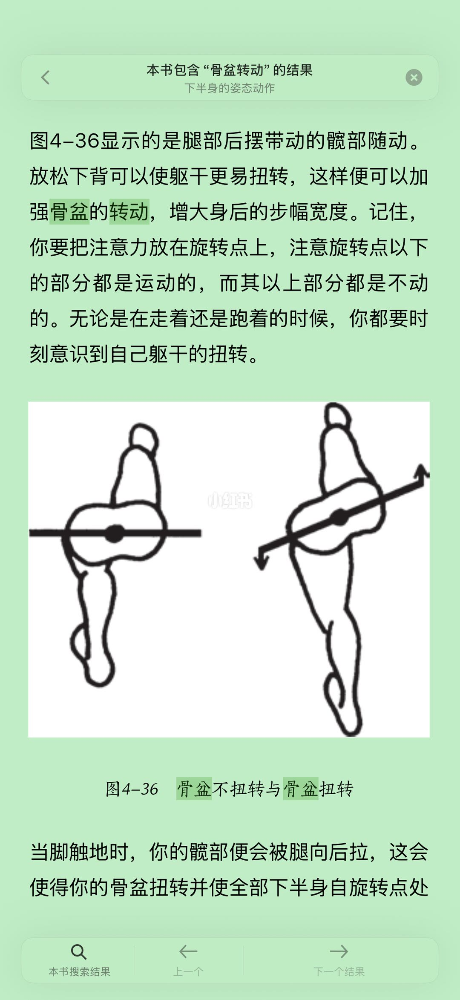
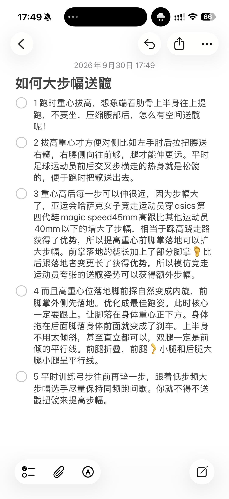
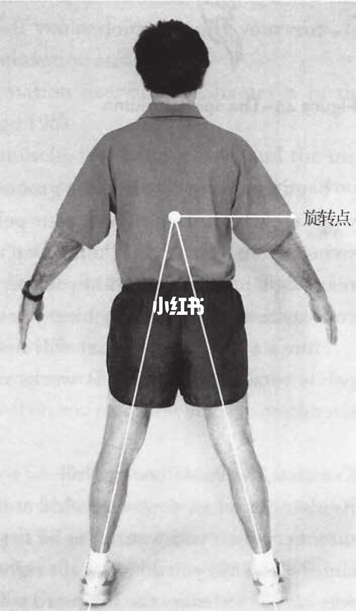
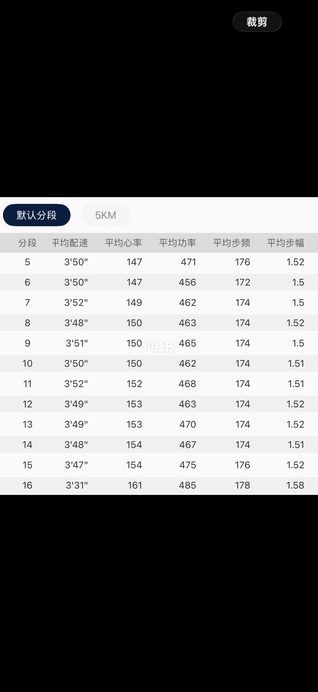

图文实录 · 小红书 · 姐夫潘（跑友互关）
如何送髋增大步幅
四页把步幅收成一件事：骨盆绕旋转点跟着后摆的腿转，重心抬起来，不要坐进髋里。
1/4
骨盆转和不转
这是一页书的截图，图号 4-36，对比骨盆不扭转和骨盆扭转。左边骨盆保持水平，腿在走，髋没有跟着转。右边穿过中心点的线倾斜了，一侧骨盆被后摆的腿带向后上方，箭头标出转动方向。正文要人把注意力放在旋转点：点下面在动，点上面保持相对静止。放松下背，躯干才好扭转，身后的步幅才会加大。页底句子被截断。书名和完整原文无法确认。

2/4
作者的五条备忘
笔记标题是「如何大步幅送髋」，时间显示 2026 年 9 月 30 日。五条都在勾选框后面。一，抬重心，想象肋骨把上身提起来，不要坐进髋里把腰压住。二，重心高了骨盆才好转；左肘后拉会拧腰，把右髋送出去，腿才能迈得更远；足球的交叉步热身被写成松髋。三，重心高会加大步幅；这里引用亚运竞走选手的鞋后跟堆高约 45 毫米、别人不到 40 毫米，并说前掌落地、重心高，比后跟着地更像把腿加长。这是笔记里的说法，不是本页给出的测量。四，高重心落地时前掌外侧先着地，核心要收着，脚落在重心下面，避免刹车。五，练习是弓步再往前多迈一步，并跟着低步频、大步幅的人跑，逼自己用髋来维持速度。

3/4
旋转点画在腰上
背面站立图。腰部一个白点，横线指向右侧，标着「旋转点」。两条线从这一点分别落到两只脚跟。背景书页是虚的，正文读不清。

4/4
一次跑的分段
跑步软件的默认分段，画面从第 5 段到第 16 段，前四段不在这张图里。第 5 到第 15 段配速大约 3 分 47 秒到 3 分 52 秒，步幅大约 1.50 到 1.52，步频大约 172 到 176，心率从 147 升到 154。第 16 段配速 3 分 31 秒，心率 161，功率 485，步频 178，步幅 1.58。图上没有写这一段是不是送髋练出来的。

汇总
图示和成绩表不是同一件事
第 1 页和第 3 页说的是骨盆绕腰上的旋转点转，下背放松，步幅从身后加出来。第 2 页把做法收成抬重心、对侧肘送髋、脚落在重心下、弓步多迈一步。第 4 页只是一次跑的后半段数据，不能证明前面的方法。鞋跟 45 毫米和竞走选手的优势是备忘里的转述。页底书句被截断，不要补全。